Setting up your Zoom integration
For event organisersNot an organiser?
You can integrate your Zoom account with Oxford Abstracts to easily set up video calls in your program. This article will help you understand what you can do with the integration and how to set it up.#
#
How does it work?#
Our Zoom integration allows you to simplify the process of adding Zoom meetings to program sessions. You can connect your main account to Oxford Abstracts and then assign Zoom users to the program columns (these can also be referred to as 'rooms') to schedule Zoom meetings directly from inside Oxford Abstracts.
NB: Only paid Zoom accounts can be linked with Zoom integration.
Skip to
Connecting Zoom to sessions
Assigning columns to users
Editing Zoom details
Removing a Zoom link from a session
Removing a Zoom account
Connecting your Zoom account#
Start by connecting your Zoom account to Oxford Abstracts.
Go to Event dashboard → Conference → Program → Zoom
The Zoom integration page allows you to begin connecting your Zoom accounts. Select Authorise Zoom Account to start the process.
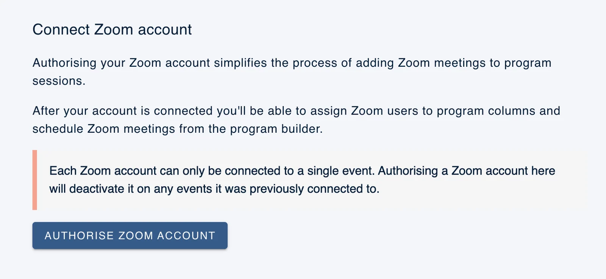
This will open the Zoom marketplace landing page where you will need to authorise the connection between Zoom and Oxford Abstracts.
NB: You must be set up as an admin for the zoom account for the integration to work
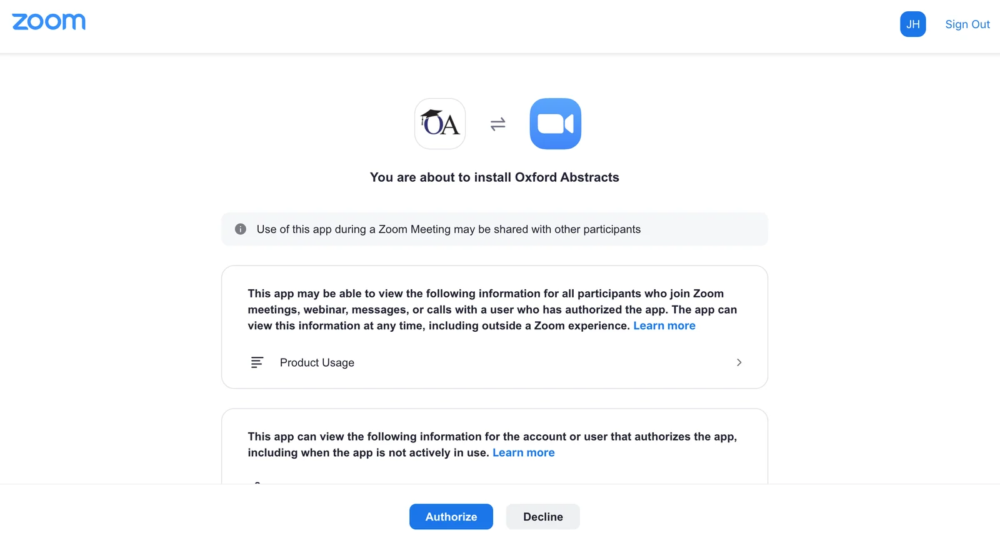
Click Authorize to complete the process of linking Zoom to Oxford Abstracts.
Once your Zoom is integrated with Oxford Abstracts software, when the attendees and presenter join the session the video feed will open in the Zoom application.
Assigning columns to users#
Once you have the Zoom account linked, you will be taken back to Oxford Abstracts and see the screen below.
This shows the columns you have set up on the program builder and the member of the Zoom account to which they have been allocated. You can only allocate one user to one column.
You can use the dropdown to change the allocation.
Once you are happy with the allocated users you can start linking Zoom to your program sessions.
NB: The Zoom user allocated a specific column does not need to be present in the sessions for them to run, if the option 'no host needed' is selected when configuring the sessions.
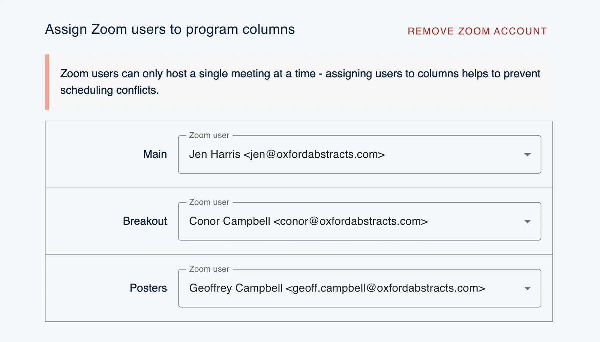
Connecting Zoom to sessions#
You can now return to the program builder.
Event dashboard → Conference → Program Builder
You can only add Zoom links to sessions that have already been saved.
Select the session you want to add a Zoom call to, and click Add presentation link, then select Zoom meeting.
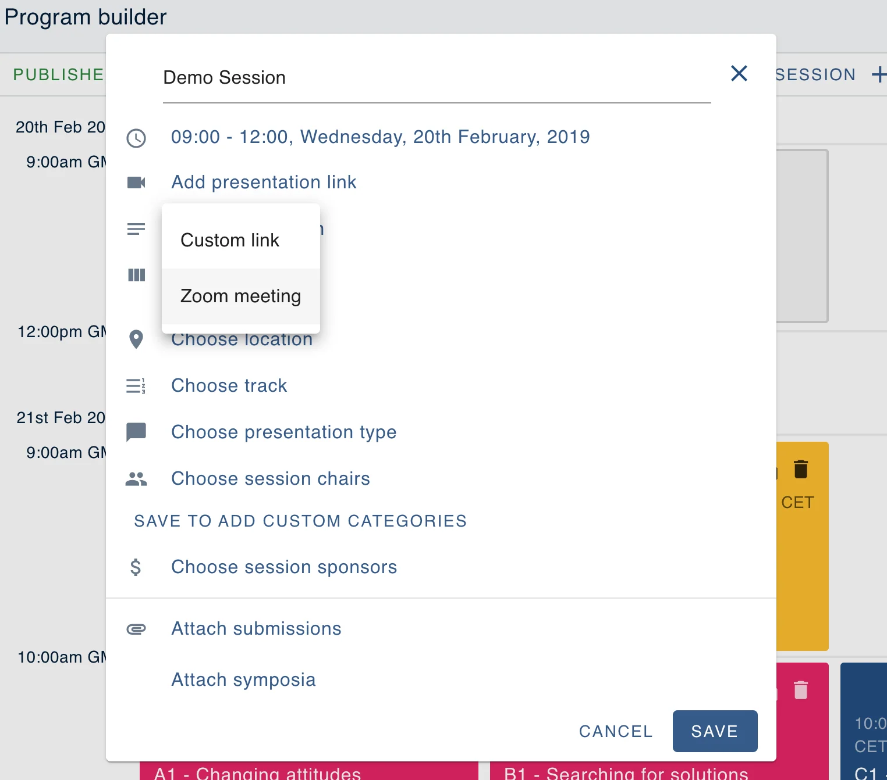
This will open a dialogue where you can configure your preferred Zoom settings including:
- Zoom user
The Zoom user will automatically be assigned based on the column in which the session appears. This can be manually changed if you are sure there are no conflicts.
- Selecting meeting ID to be generated automatically or using a personal meeting ID
- Requiring a passcode
- Creating a waiting room
- Requiring video to be on or off automatically
- Audio options
- Advanced options
- Being able to join with or without the host
- Mute participants on entry
- Add all licensed Zoom users as alternative hosts
Once you're happy with the setup click Save.
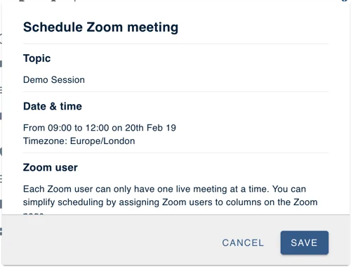
You'll now see that the Add presentation link option has been populated with a Zoom meeting.
You can click on the Zoom meeting to edit the details or click the Button text row to adjust the label for the button that appears in the program.
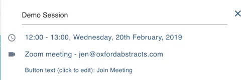
The button appears within each session popup.
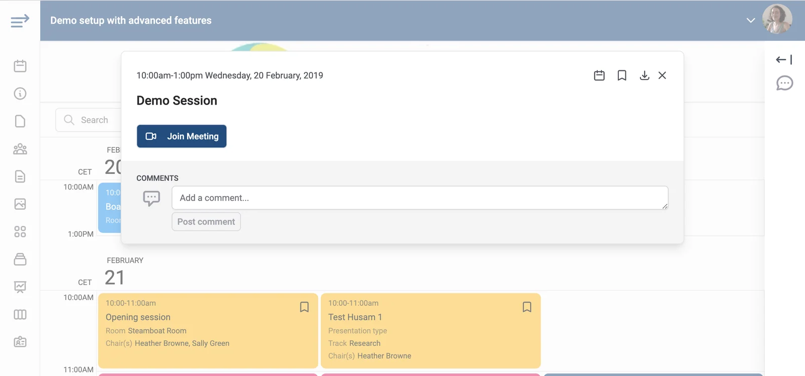
Your Zoom link is now ready to go. Attendees and presenters will be able to join via the button when the event starts.
Editing Zoom details#
To edit a Zoom link in a session, select the session you would like to edit. Hover on the Zoom meeting row and select the cog icon. This will open a dialogue where you can edit the details of the zoom meeting.
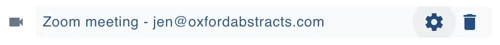
Once you are happy with the details in the set up, click Update to save it to your session.
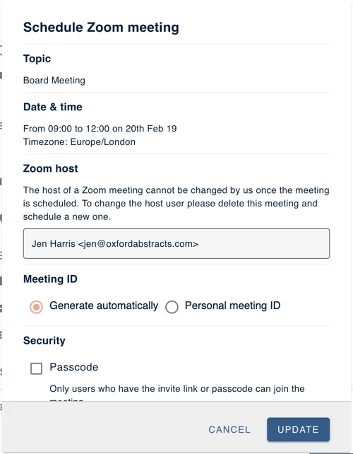
Removing a Zoom link from a session#
To remove a Zoom link from a session, select the session you want to remove it from. Hover on the Zoom meeting row and select the bin icon.
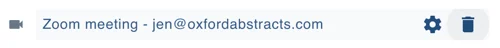
Removing a Zoom account#
If you want to unlink your Zoom account from Oxford Abstracts you can do this via the Zoom page.
Go to: Event dashboard → Conference → Zoom
From here you can simply click the Remove Zoom Account button in the top right corner.
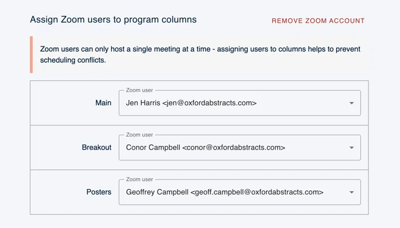
Didn't solve it? Ask our support team
No question is too small, and there's no charge for asking. Raise a ticket and someone who knows the software will pick it up.
Did this page solve it?
Thanks — this helps us fix it.